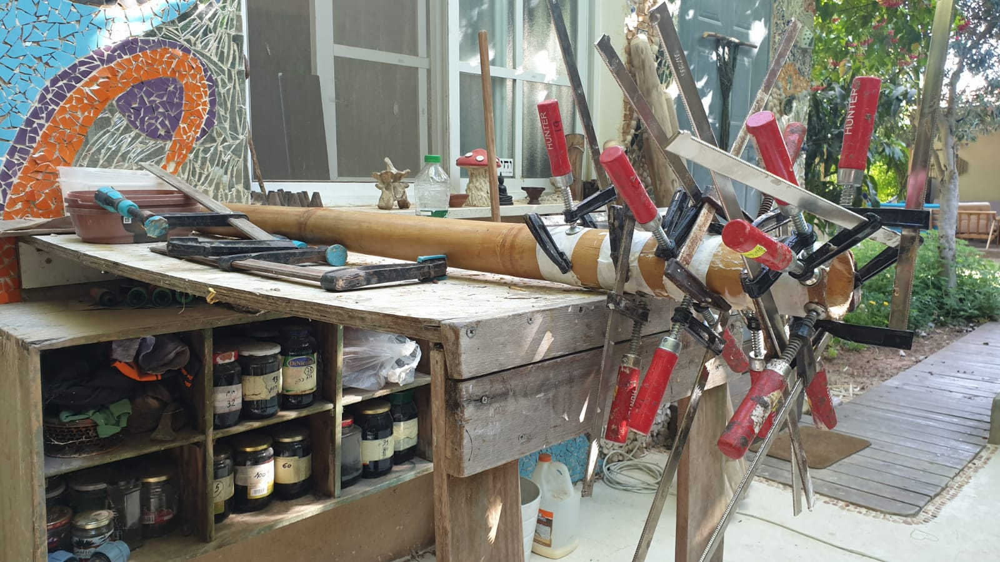
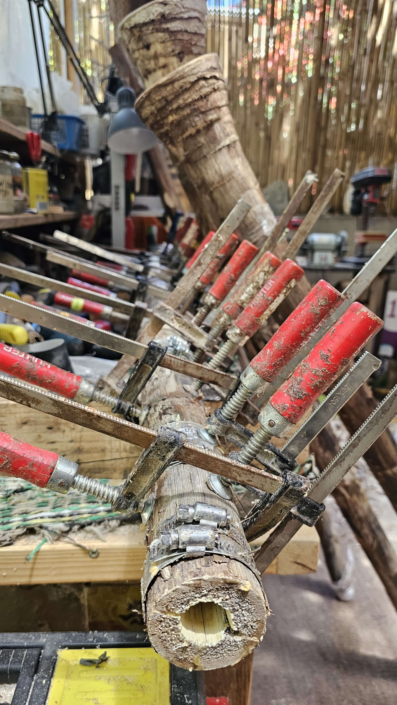
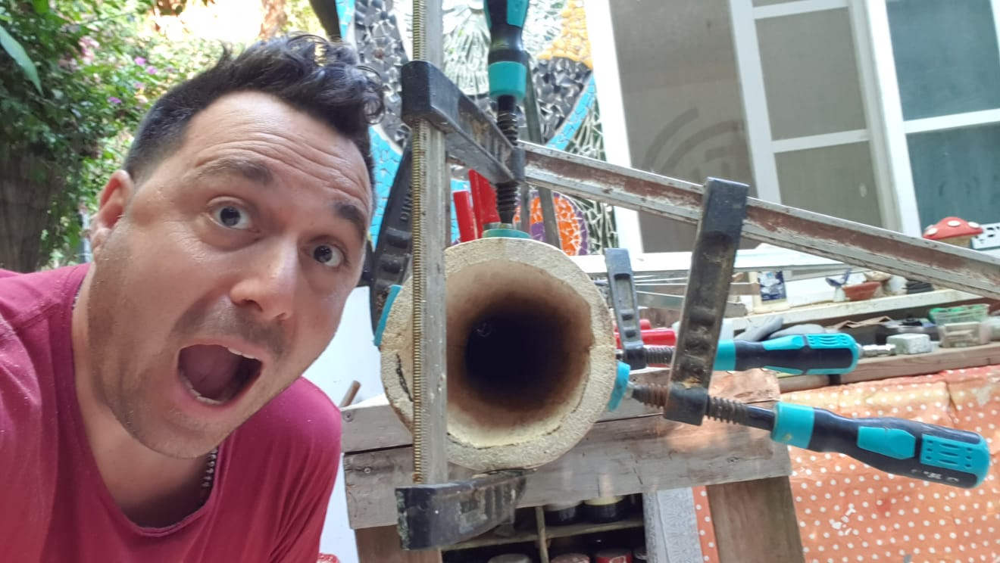
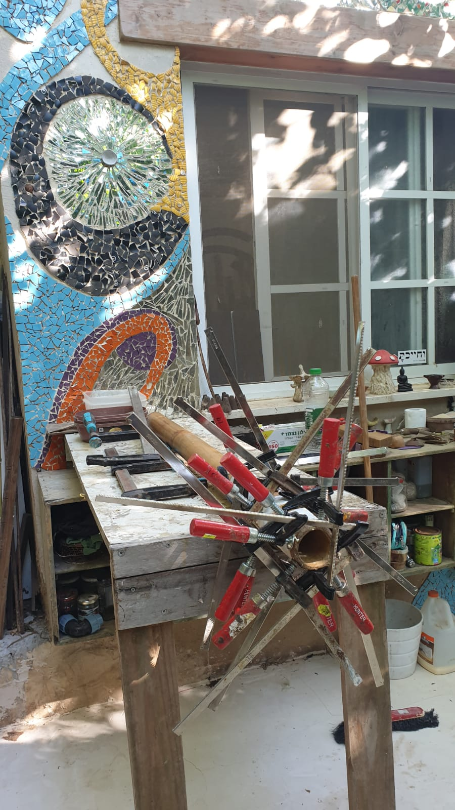
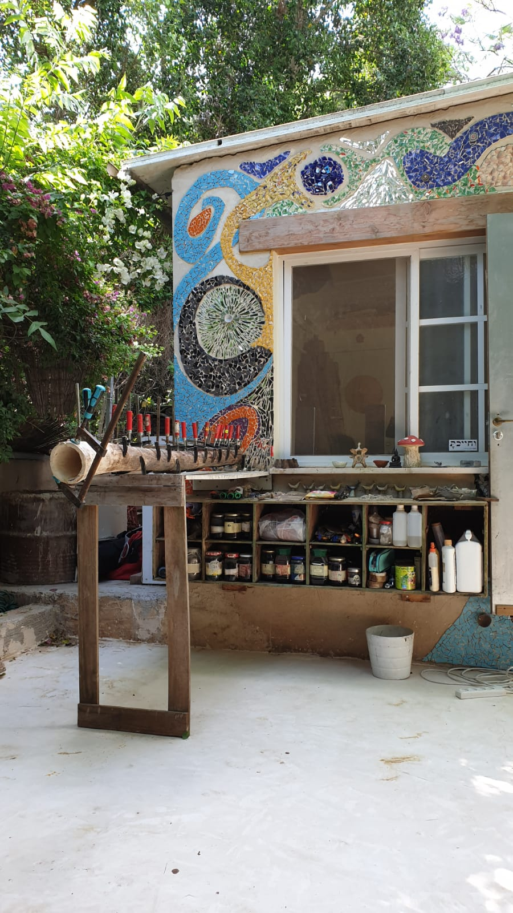
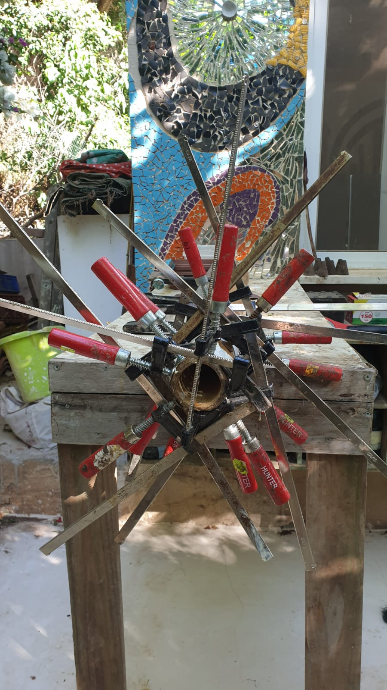
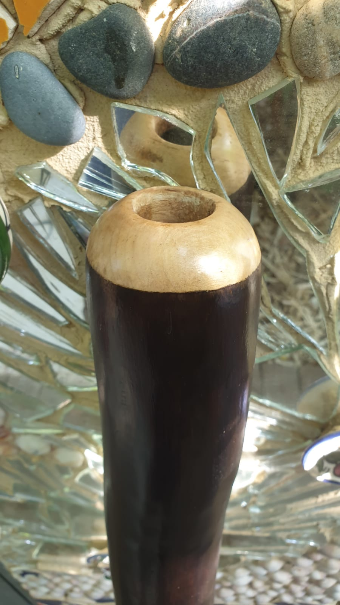
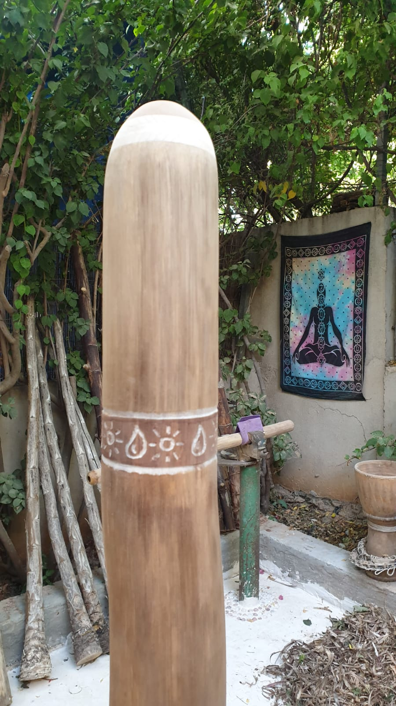
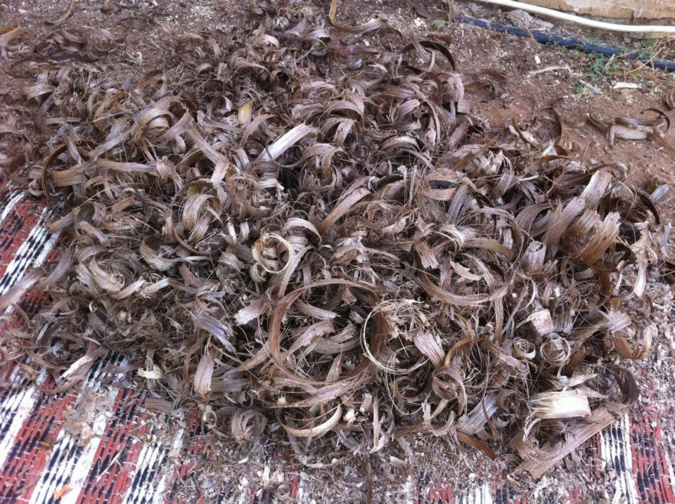

שוקולד — על הפסמילוי הקריאה לפעולה. כהה מהטרקוטה, עדיין חום מול הפוטר.
טרקוטה #A44E2B ירדה מהפסים. הירו עם תמונה. תמונת אורך נשארת בתוך העמודה שלה. הקריאה לפעולה: כותרת, תת־כותרת וכפתור. הטקסט של אייל לא נכתב מחדש.
נימרוד פסל את #A44E2B לפס הקריאה: בהיר מדי, והגוון לא יפה. הפס עכשיו שוקולד #5C3A2E, לבן עליו 10:1. הכפתור חול #D8C7B5 עם טקסט שוקולד. הפוטר נשאר #0E0905. הטרקוטה נשארת בלוח כפסולה, לא כמילוי.
| קובץ | איפה | למה |
|---|---|---|
| EA-000239.jpeg | הירו, רקע מלא | שולחן העבודה לרוחב. ההירו לא ריק |
| EA-000298.jpg | הפסקה הראשונה, תמונה עומדת בצד | נשאר — סומן כיפה |
| EA-000214.jpeg | «מתי צריך תיקון», חצי־חצי | ממלא את חצי השורה, בלי שטח מת מתחת |
| EA-000238.jpeg | «איך נראה התהליך», עמודה בגובה הטקסט | תמונת אורך חתוכה לעמודה, הטקסט לא בורח מתחתיה |
| EA-000220.jpeg | שורת רקע: «יש לך דיג'רידו» | הסטודיו מאחורי הכותרת, התת־כותרת והכפתור |
| EA-000237.jpeg | גלריה | קטע אחד של כמה תמונות, לא תמונה בודדת בסוף |
| EA-000268.jpeg | גלריה | |
| EA-000242.jpeg | גלריה | |
| EA-000161.jpg | גלריה |
העמוד

שירות תיקון מקצועי לדיג'רידו - לטיפול בסדקים, שברים, עיוותים, שחיקה והתאמות מבנה המשפיעות על הצליל ועל זרימת האוויר בכלי.
לתיאום בדיקה לכלי
תהליך תיקון כלי דיג'רידו מבוסס על הבנה גיאומטרית-פיזיקלית של הכלי, אורך הצינור, קוטר, הפיה, הלוע, מבנה התעלה הפנימית ולחץ האוויר. כל אלה קובעים את האופן שבו הדיג'רידו מגיב לנשימה ולנגינה.
אייל עמית עוסק בבניית ותיקון דיג'רידו מעל שני עשורים (מאז 1999) ולמד את מלאכת בניית הכלים בהודו אצל מוקש דהימן, מאסטר לבניית דיג'רידו.
הרקע של אייל כמהנדס אלקטרוניקה בא לידי ביטוי בהבנה של תדרים, זרימת אוויר, התנגדות, ואופן שבו הכלי מגיב לנשימה.
העבודה מתבצעת עם חומרים מהאיכות הגבוהה ביותר, ללא פשרות וללא קיצורי דרך בהתאם לסטנדרט העבודה ולרמת הדיוק הנדרשת בכל תיקון.
כל תיקון מתחיל בבדיקה של הכלי והבנה של הבעיה ומתבצע בהתאמה מדויקת למבנה ולמאפיינים האקוסטיים שלו.
לא כל בעיה בכלי נראית מיד לעין במקרים רבים השינוי מורגש קודם כל בצליל, בתחושה או בהתנגדות האוויר.
אלו המצבים הנפוצים שבהם מומלץ לבדוק את הכלי:
גם אם לא בטוחים בדיקה קצרה יכולה למנוע נזק גדול יותר בהמשך.

גם אם לא בטוחים בדיקה קצרה יכולה למנוע נזק גדול יותר בהמשך.
לתיאום בדיקה לכלי
כל תיקון מתחיל בהבנה מדויקת של הכלי ולא בפתרון מהיר.
כך נראה התהליך:
1. בדיקה ואבחון בדיקה פיזית של הכלי יחד עם הקשבה לצליל ולתגובה שלו לנשימה איתור סדקים, עיוותים ובעיות מבנה פנימיות
2. הבנת המבנה האקוסטי ניתוח הקשר בין מבנה הכלי לבין הבעיה קוטר, אורך, התרחבות פנימית והתנהגות זרימת האוויר
3. בחירת שיטת תיקון התאמת פתרון מדויק לכל כלי סגירת סדקים, חיזוק מבני, התאמות פייה או שינויים נקודתיים במבנה
4. עבודה עם חומרים איכותיים שימוש בחומרי גלם ברמה הגבוהה ביותר ללא פשרות וללא קיצורי דרך בהתאם לסוג התיקון
5. בדיקה וכיול סופי בדיקה חוזרת של הכלי לאחר התיקון צליל, תגובתיות וזרימת אוויר עד לחזרה לאיזון תקין
כל כלי מקבל התייחסות אישית
אין תיקון "סטנדרטי"
תיקון דיג'רידו הוא לא רק עבודה טכנית על עץ אלא הבנה של כלי שמשלב מבנה, צליל ותגובה לנשימה
העבודה כאן נשענת על שילוב של ניסיון, מסורת ודיוק:
עבודה יומיומית עם דיג'רידו - בנייה, תיקון וליווי נגנים
מאסטר לבניית דיג'רידו, שממנו נלמדה מלאכת הבנייה והעבודה עם הכלי
התייחסות למבנה הפנימי, לזרימת האוויר ולהשפעה שלהם על הצליל
שימוש בחומרים איכותיים בלבד, תוך התאמה מדויקת לכל כלי
אין פתרונות אחידים - כל כלי נבדק ומטופל לפי המאפיינים שלו
התוצאה היא תיקון שלא רק סוגר בעיה אלא מחזיר את הכלי לאיזון מדויק ונכון
למידע נוסף על הגישה והעבודה עם הכלי השיטה - עבודה עם נשימה ודיג'רידו
משך התיקון תלוי בסוג הבעיה. תיקונים פשוטים יכולים לקחת זמן קצר בעוד שתיקונים מורכבים דורשים זמן לייבוש, ייצוב ובדיקה
ברוב המקרים כן. גם כלים עם סדקים או שברים משמעותיים ניתנים לשיקום אך יש מצבים נדירים שבהם הנזק אינו מאפשר תיקון מלא
לעיתים משתלם יותר לרכוש כלי חדש מאשר להשקיע בתיקון כלי ישן
למידע נוסף על כלים חדשים בעבודת יד כלים ואביזרים לדיג'רידו
המטרה היא להחזיר את הכלי לאיזון המקורי שלו במקרים מסוימים אף ניתן לשפר יציבות, תגובתיות וזרימת אוויר
המחיר משתנה בהתאם למצב הכלי וסוג העבודה הנדרש הצעת מחיר ניתנת לאחר בדיקה של הכלי, ללא התחייבות
כן. כל תיקון מתחיל בהערכת מצב ומתן הצעת מחיר ללא התחייבות מראש רק לאחר אישור - ניגשים לביצוע העבודה
כן. במקרים רבים ניתן לשלב התאמות כמו שדרוג פייה או חיזוק מבני בהתאם למצב הכלי ולצורך
לא כל בעיה בכלי נראית אותו דבר וכל תיקון דורש גישה אחרת
אלו סוגי התיקונים הנפוצים:
איטום וחיזוק סדקים חיצוניים ופנימיים תוך שמירה על יציבות מבנית וצליל תקין
שיקום אזורים שבורים וחיבור מחדש של חלקים בהתאם למבנה הכלי
התערבות מבוקרת בתוך חלל הכלי לצורך שיפור יציבות וזרימת אוויר
תיקון, עיצוב מחדש או החלפה של פיית הדונג להתאמה מדויקת לנגינה
מעבר מפיית דונג לפיית עץ יציבה ומדויקת יותר בהתאם להעדפה אישית
שינויים עדינים במבנה הכלי המשפיעים על התנגדות, לחץ אוויר ותגובה לנשימה
ריענון מראה הכלי ללא שינוי מבני כולל תיקוני גימור חיצוניים
הגנה על העץ ושיפור עמידות הכלי לאורך זמן תוך שמירה על תכונותיו האקוסטיות
ניקוי, חיזוק והתאמות לכלים שלא טופלו לאורך זמן
כל תיקון מתבצע בהתאם למבנה הספציפי של הכלי ולא לפי תבנית קבועה

אם הכלי נסדק, נשבר, איבד יציבות או פשוט לא נשמע כמו פעם אפשר להביא אותו לבדיקה ולקבל הערכת מצב מקצועית
הבדיקה כוללת אבחון של מצב הכלי הסבר על אפשרויות התיקון ומתן הצעת מחיר לפני תחילת העבודה
לתיאום בדיקה לכלי


